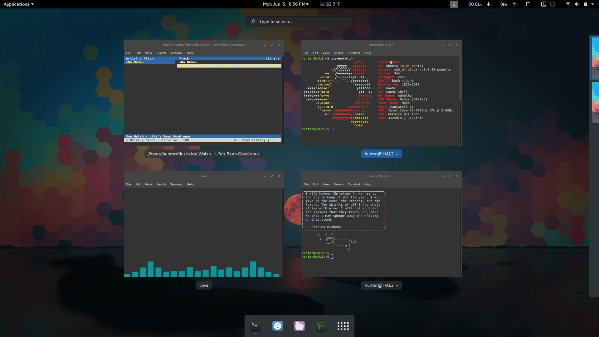

Are you tired of your boring linux distro? Some little changes can go a long way!
My Gnu/Linux distribution is Ubuntu GNOME(soon to just be Ubuntu because of the merge). I attempted to use Debian but was not too fond of the minimal driver support. The main culprit is the NVIDIA graphics card but it was probably the straw that broke the camels back. I was shocked when I installed Ubuntu and everything just worked out of the box. I use Ubuntu GNOME because I am not a fan of Unity and now is certainly not the time to become invested in the software.
The wall paper I use is from reddit/imgur. I can't find the original anymore.
The icon theme I use is Moka. It gives a nice minimalist feel while still being functional.
I use the default GNOME terminal. I have the lines
if [ -x /usr/games/cowsay -a -x /usr/games/fortune ]; then
fortune | cowsay
fi
added to the bottom of my .bashrc file so on open I get a little piece of fortune from a cow. The other programs in vision are screenfetch for seeing info, cava for audio visualization, and cmus for listening to music. The main GNOME extensions I use are Dash to Dock, lock keys (for seeing if caps/nums lock is on), openweather, clipboard indicator, and netspeed.
This is what I use when switching windows when I have too many open. Seeing all the windows in a compact manor is integral to my productivity.